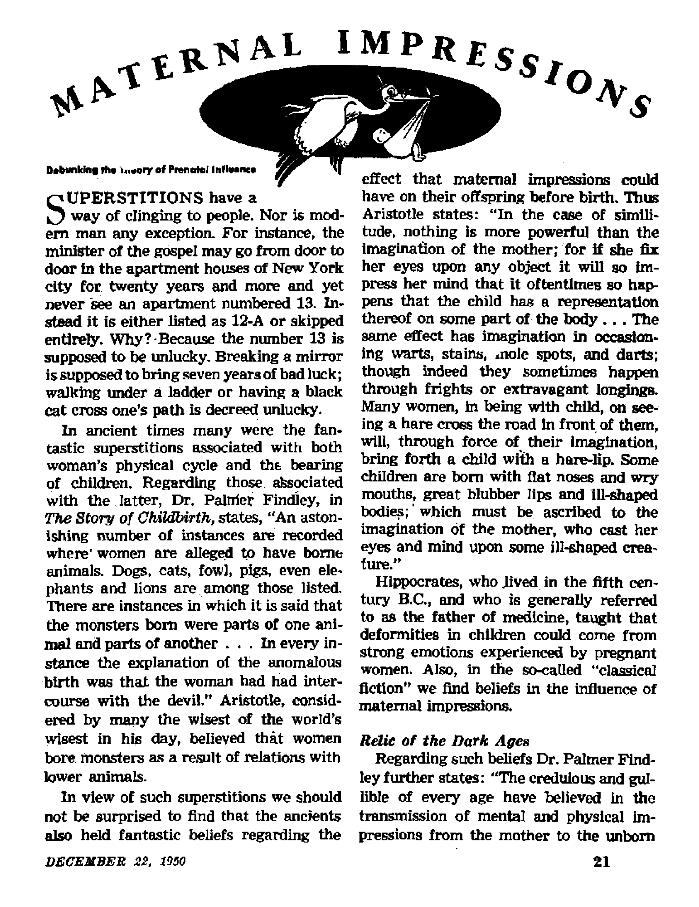

The extent of man’s failure to measure up to the role of earth’s caretaker, assigned to him by God
Twentieth-century scientists who envision rocket travel would obsolete the saying, "The sky is the limit”
Debunking the theory of prenatal influence
Not December 25, but about Octobe
9 was Jesus born
DECEMBER 22, 1950 semimonthly
THE MISSION OF THIS JOURNAL
NewB sources that are able to keep you awake to the vital Issues cf our times must be unfettered by censorship and selfish Interests* “Awake I” has no fetters. It recognizes facts, faces facts, Is free to publish facts. It is not bound by political ambitions or obligations; it Is unhampered by advertisers whose toes must not be trodden on; it is unprejudiced by traditional creeds. This journal keeps itself free that it may speak freely to you. But it does not abuse its freedom. It maintains Integrity to tnith.
"Awake I” uses the regular news channel?, but is not dependent on them. Its own correspondents are on all continents in scores of nations. From the four corners of the earth their uncensored, on *» the-scenes ispoils come to you through these columns. This journal's viewpoint is not narrow, but is international. It is read in many nations, in many languages, by persons cf all ages. Through its pages many fields of knowledge pass in review—government, commerce, religion, history, geography, science, social conditions, natural wonders—why, its cover* age is as broad as the earth and as high as the heavens.
"Awake I" pledges itself to righteous principles, to exposing hidden foes and subtle dangers, to championing freedom for all, to comforting mourners and strengthening those disheartened by the failures of a delinquent world, reflecting sure hope for the establishment of a righteous New World.
Get acquainted with “Awake I” Keep awake by reading “Awake !n
PDBU|aHBD SEMIMONTHLY Bl WATCHTOWER BIBLE AND TRACT SOCIETY, INC.
117 Adama Street Brooklyn 1, N, Y^ €. 9. A.
N. H. Knobs, Presided Geaht Suirta, Secretary
Printing this 810.000 Five cents ■ copy
LuimN in wUnh thl» rank* h mbiiihri: gemlswctlily—Snetish, (tennan, Spanish. Mootb-]y—AfrltoLUU, Danish, Fnmb, Cbrw, FnrnraM, ftndiih, Ukr*ini«a.
Ad ot Much 3. 1878. PriaUd la B.8,1.
Oflteea Teurly Subscriptloo Hata
AMTlca, IL&, 117 Adana St. Brooklyn 1, N.Y *1 Aiitralla, 11 Ha-stford Bd., Btrathfldd, N.8.W. flt CMada, <0 Irvin Ata,, Toronto 6, Ontario fl EniiUMi 84 Cr*«n Terrace, Locdon, W. 2 ■ Gi Sira AfriM, 623 Boston Home, C*pe Town 5»
Enlsrd ar tecond-dass matter at Brooklyn, N,
CONTENTS
The Ground: From Riches to Ruin
Modern Nimrods Ravage the Wilds
Hot and Cold Wars Pillage the Earth 6
Two Years Behind Convent Walls
Modern Position Reasonable, Scriptural S
“Your Word Is Truth’1
Index to Volume XXXI of Awake/
9/ “Now it is high time to awake’’—Romans 13:11 &
VoJume XXX] ""' Brooklyn, N. Y„ pecamber Z2, 1950 Number M
THE rapidly spinning surface beneath your ffeet is a home truly wonderful to behold. Everything about the ball on which man lives shows it to be an ideal permanent dwelling place for the human family. Measuring 7,926 miles in diameter at its equator, man’s spherical home provides 57,510,000 square miles of land area, sufficient to comfortably accommodate a multitude of people. Furthermore, over these vast surfaces the earth was clothed at its creation with dense fofests, powerful, driving rivers and rich fertile soil, all for the use of man in obtaining his needs and livelihood. Beneath the surface are to be found minerals, ores and precious stones, and walking the plains, mountains and forest trails are the many lower animals of profitable use. An atmosphere 700 miles deep surrounds the earth, providing air that man can breathe near the surface of the globe- Grandly this abundant home sweeps in its orbit about the sun, bringing day and night and the four seasons.
That man was given the care and possession of such a place as the earth must at once be seen a privilege not to be lightly esteemed. Any builder of a home has a right to request the proper care of its facilities when it is rented or leased to another party. It would not seem at all unreasonable, then, that man's Creator should require this of the earth's caretaker. True, it would be necessary for the earth’s guard-
ian to use good judgment in its care and keeping. Knowledge of the resources available and how they might be best used to the benefit of all mankind would have to be acquired. But man, fashioned in the image and likeness of God and made the highest form of intelligent life on earth, would easily be able to meet these reasonable requirements.
But what do we find to be the case In this twentieth century? Anyone reading these lines is perhaps thinking of the gaunt famine stalking through so many parts of the earth, the international jealousy over raw materials, the receding forests and water supplies, or of man’s ruthless war on wild life.
In all honesty, it is plain to see that man’s home today is a place of unrest and distrust. Surely the abundant resources are not being used for the sole purpose of furnishing the human family with its material needs. If there is to be any hope of a solution, it will be necessary to locate the causes for present mismanagement, waste and ruin of the one-time land of plenty.
Polluting the Breath of Life
To start with the simplest thing, that which might be so easily taken for granted, what of the air man breathes? It was air at his very beginning that was used to start life in man’s body, and upon it the continuance of his life has depended ever since. You would think, then, that he would naturally care for this all-important matter to see that what went into his lungs was pure and beneficial to his body for the sake of its efficient operation. However, if you live in a large industrial city your chances of inhaling clean, healthful air have long since gone with the wind. The Atmospheric Pollution Committee estimates that whereas small towns receive an annual deposit of 75 to 100 tons of smoke, the larger cities get ten times as much. It is said that 1,780 tons of chimney smoke ancj dirt settles over New York city in the first 200-foot layer. Besides the cost in money ($2,500,000,000 a year to people of the United States), smoke runs up an incalculable charge against the public health.
Much of the smoke menace stems from sheer carelessness. Soft coal is a heavy smoker when heated between 450 and 900 degrees, when it gives off many gases and tarry vapors. However, if these gases are heated to 1,500 degrees in the company of sufficient oxygen, they bum to provide heat instead of a gas attack. It is estimated that the United States smokes away about 35,000,000 tons of coal each year. Proper equipment together with knowledge of the correct way to stoke furnaces now exists, but busy man in his highly mechanized twentieth-century playhouse cannot be bothered with taking precious, expensive time for such trivialities. How particular he is that every ounce of food he consumes is completely clean and uncontaminated, while each day he pumps five times as much air into his lungs as he puts food into his stomach. If he is a city dweller this air has a generous helping of sooty, tarry filth.
Pick up a handful of soil. You walk on it, your house is biiilt on it and it is easy to forget about its importance to you day by day. But man was made from the earth and from his first day on this planet until now his existence has depended on it. From it come all our fruits and vegetables as well as the food that nourishes the animals providing our meat supply. Certainly man’s commission as earth’s caretaker would include the charge to properly care for the soil to prevent waste and the depletion of its mineral content.
In the one hundred years from 1840 to 1940 the earth’s population more than doubled, from 1,000,000,000 to 2,200,000,-000 people. These persons must be fed to survive, and nutritionists tell us that each person requires 2.5 acres of agricultural land, to be nourished properly. However, the world’s supply of this type of land now equals only little more than an acre per person. In Europe a mere 0.88 acre of arable land per person exists, and in China, where 100,000,000 have starved within the last hundred years, less than one-half acre per individual is to be found. Hence, how dire are man's needs with respect to the vital matter of food. What can be done about the resources of his soil? More properly one might first ask, "What was done to cause this?"
The Ground: From Riches to Ruin
Take America, a yet prosperous land, as an example. When the rugged pioneers first turned their faces westward, they looked over a solid forest from the Atlantic to the Mississippi and the promise of more of the same on the far western slopes along the Pacific. Between the empires of trees lay the rolling plains and prairies rich in flourishing grasslands. The Middle West boasted some of the most productive land on earth. In truth, here was an overflowing treasure from sea to sea.
What happened? Greedy, money-hungry men, too much in a hurry to stop to think of the future, moved in and on, exploiting the soil, draining, plowing, and going westward. In Jamestown, Virginia, a museum extols the merits of one John Rolfe for his achievements in the drying and preparing of tobacco for commercial use. Many who have since become millionaires at the expense of others' health by virtue of the tobacco industry will join with the museum In thanking Mr. Rolfe* But Virginia's so rich and fertile soil has never recovered from the wholesale ravaging it received from tobacco planting. The destructive weed has sapped it of its very life.
In the sprawling western rangelands, all 800 million acres of them, where once 25 million head of cattle could have been accommodated, one could, in 1935, find only room for half this many, due to continuous overgrazing. To make up for the lack of pastoral, grazing, ranchers must buy commercial feed, and the consumer feels the result in high priced steaks and chops.
But the most obvious and rapidly destructive result of poor farming methods and overgrazing is soil erosion, whereby the farmer and rancher have stood by while acres by the hundreds have blown away with the wind. Before a Congressional committee in 1939, Dr. Hugh H. Bennett testified that in this country's short life "we have essentially destroyed 2$2 million acres of land, crop and range l^id. Erosion is destructively active on 775 million additional acres, We are losing every day as the result of erosion the equivalent of two 14Ckacre farms”. The Soil Conservation Service estimates that 5,500,000 tons of earth flows by Washington in a year on its way down the Potomac. This is only, a small member of a great family of mighty rivers, muddy with topsoil from one cogst to the other.
Sad to say, man seems to have learned pitifully little from his bitter experience. With his soil in the critical state it is, he will plant food, struggle with it against the elements, with great difficulty harvest a crop, then plow it under to keep prices up. In time of war the food is rationed, hoarded and "black marketed” at home while great shipments are lost, wasted or spoiled while en route to overseas forces. All this occurs while, in times of war and peace, millions starve throughout the earth.
Forests and Waters
The relentless cutting, clearing, then moving-on attitude of the westward surging pioneers and those that followed them did more than injure the soil. They made a horrible waste of untold acres of mighty timbers. Within 150 years this country has lost more than one-half of its high-grade timber. Today many sawmills are cutting ten-inch logs as saw timber, and the nation's mature forest resources consist mostly of soft woods, largely In the West The shortage of timber has become more than noticeable, for in 1946 the growth of saw timber gave the country less than half its requirements. This lack of supply has contributed largely to the bousing shortage. Though some forest waste might be explained less harshly, there is no conceivable excuse for the countless destructive forest fires resulting from sheer ignorance and carelessness. Such is surely the equivalent of burning to the ground the houses, furniture and countless other products that would have come from those trees.
The forestry problem has relation to another shrinking resource, the underground water supply. Watersheds have been shredded of their forested coverlets and this In turn has speeded the runoff of rain water. Besides causing erosion this has diminished the quantities of water that should filter through the ground to replenish the subterranean reserves. The natural result is that throughout most sections of the United States the water table is falling. Near Baltimore it dropped 146 feet from 1916 to 1948. Putting it differently, one would have had to dig 146 feet deeper in 1948 than in 1916 to reach the same water*
Modern Nimrods Ravage the Wilds
When the woods are not being wasted their inhabitants are* The notion of hunt’ ing ‘Tor sport” is nothing new, but dates back to the world's first-known dictator, Nimrod, ruler of Babel, the first human political government after the Flood* Thanks to his carnage of animal flesh all for the sake of “sport” and his own fame as a great hunter, he scattered the wilds with the carcasses of the animals he cut down, and contributed to the fear and enmity of the beast for man. Hence the modern term *‘nimrod” as a synonym for hunt* er. In the light of proper understanding, it is certainly no compliment. Mighty bison and elk once thickly roamed the Alleghenies of the eastern United States and many of the open ranges of the central states, but have now been virtually shot away before the hunters’ blazing guns. The fisher, a larger member of the weasel family, had to be protected from hunters by law for thirteen years In New York state, to prevent its total extinction.
The brutality of hunting wild life for sport is driven home by the countless carcasses found mutilated and abandoned. Worse still, some poor beasts, wounded by careless novices with guns, have been known to stagger about the woods for days in a state of agony before death came.
Retribution to the vainglorious hunter has come in various ways. In his lust for life he has succeeded in all but wiping out many forms of life that provided a natural protection for him. The stomach-minded man may think nothing of shooting down a Iazi|y circling hawk that he would never think of eating. But in so doing he has killed one of the farmer’s best friends. The slow-flying red-tailed hawk that lives almost entirely on Ireecteand rodents, and is thus a great boon to the crops, is too often mistaken for the infamous cooper’s hawk of poultry destroying fame. Similarly, many meadow larks are shot. Yet these birds depend on insects for 75 per cent of their subsistence and make up the balance In seeds of weeds. The bob white quail has all but vanished from America, with the result that the vicious chinch bugs run rampant through $20,000,000 worth of crops each year. In their much-advertised wisdom the modem smart alecks have destroyed the guardians of their dwindling resources, upsetting the balance in nature and causing some to now wonder whether after all man or insect will prevail in the struggle for survival.
Finally, man has gotten even with himself by killing off his own kind while engaged in these recreational activities at the expense of wild life. In the year 1948 alone it was authoritatively estimated that 425 hunters* were killed in the woods the preceding year, while 1,400 were wounded. So man who in his working hours so often does so much to deplete the soil and waste fits food supply along with his other natural resources takes advantage of his “resting hours” to blast away at the few safeguards that he is unable to destroy at other times. With such a destructive nature brought to light, it is no wonder that havoc to the earth is plotted and carried out on a larger scale, too, as we shall now see.
Hot and Cold TFars Pillage the Earth
The earth abounds in precious metals and minerals with which the mighty empires of steel and iron, the skyscrapers, the railroads, automobiles, countless pieces of machinery and other everyday valuables of the modern world are made. The cost in obtaining these metals and minerals is, of course, great, but nothing when compared
to toe many uses to which man can . put the products. But, usually, what takes place? Some natkmH are relatively seif-HiTffldsnt'ln many or mast of the essential metals, bo they become known as the “haves". Others tack many Important raw materials and become known as the “have note". Such was the case in oneaay Europe between the two world wars. Germany was able to produce only 25 per cent of her Iron ore and petroleum requirements and was badly lacking in ferro-alloys, such as manganese, nickel, chromium, mdlybde-num, tungsten, and vanadium. It also lacked its needs in nonferrous minerals, such as copper, tin, lead, mercury and zinc.
The subsequent events are well known. The nazis took over, geared all German industry for arms production, worked on the production of as many synthetic materials as possible and bent every effort to make the nation strong militarily and as self-sufficient as possible. Why? To assist the German people? Not at alii but simply tn later make It possible to absorb tier neighbor stales by force, gain control of their economies and move on to what the nazi leaders madly visioned as conquest of the world. Soon the entire world was ignited end in all nations the mines were scraped, the treesurieif emptied and all the raw materials in sight mustered for war.
At great cost man dbg into the earih, kyscWShJi fotK her WA'ft’i’al -ard wealth, assembled it Into mighty battleships, sailed them to the middle of the ocean, then blew them out of the water, sending their crews and cargoes to the bottom with aerial bomh*udment or a torpedo from an enemy submarine. In time, that plane or submarine was destroyed in retaliation.
War Is an insane waste of resources. All the sclenti fie genius of each side is mustered in what becomes a war of the laboratories as well, and each feverishly mixes all known compounds and elements in an effort tn And the most destructive implements of warfare. Time, money, energy, brains, all beyond reckoning, ore poured into the enterprise; then, at last, the results; a new super bomb, a "block buster1’, capable of wiping out whole blocks and sections of cities with a single explosion. Not enough. Back to the laboratories. More experiments, time, money and resource Upping. Now what? A bomb tn end all bombs! An atom is split and the resulting explosion will knock out a city. So on and on it goes with silly, silly man sacrificing earth's bounty for commercial exploitation in times of "peace11 and blowing it to bite in times of war.
Were It but possible lo partially describe all the resourc™ squandered by war. Think of the time lost: tan years odt of the last thirty-six spent in actual “total war", not to mention the countless smaller contests that have been constantly in progress. 171 ink of the money spent: $1,498,-972,042,741 for World Wars land IT together. Consider the )iv&: over 30,000,000 put in untimely grawa from those two warn and more than 82,000,000 recorded on the total casualty lift- All this wus endured with the future vision of a promised “Four Freedoms” in sight Instead, today a hungry, fearful world, half of which enjoys no freedom of worship or expression el-this, tjtj Iwo ■gcrSrei ui nn
“iron curtain", Each faction looks doubtfully at its dwindling resources and its opponent, waiting for someone to make a false move. Meanwhile The world teeters on a powder teg.
Deftlmyitig the Destroyer*
Quite plainly, man Iula proved a wanton home-wrecker. But the gracious God who mode him and originally gave him a paradise home cannut ba blamed for the mess man haa made of it. Before ever man fuL
DEC^BEB
filled his Creator's mandate to keep, prosper and populate his earthly dwelling place, he fell in rebellion with the great adversary and home-wrecker, Satan we Devil. Since then and man’s expulsion to sweat it out among the thorns and thistles, his history has borne out the results of man’s continuing under the influence of the wicked “god of this world”. Quite properly, therefore, man is in God’s sight unfit tu care for, populate or rule over this earth with his present system of things.
Wherever human frontiers have advanced, ruin and waste and wantozmess have paved the way, leaving raw scar tissue where fertile abundance had prevailed. Pillaging, pirating, plundering, greedy “empire builders” have chopped and chewed their way across the continents, and rubbed their earthly home of its splendor and wealth while taking no thought of tomorrow. But “tomorrow” cannot forever be put off, and today thinking men, with knowledge of the earth’s ability to continue providing for man’s needs, are saying that now something of a drastic nature must be done to save even the human race and preserve some semb/ance of a decent living standard. But all just persons with an eye for future security will rejoice to learn that the Great Builder of the earth has his own way of preserving it and yet rendering it a place of happy abundance for worthy inhabitants.
The Bible furnishes hope that the demonic rule under which the earth has suffered since Eden will not forever prevail, but that Satan the destroyer and all greedy wasters on earth will be brought to final account at the now nearing battle of Armageddon. Says the last Bible book:
“We give you thanks, Lord God Almighty, who are and were, because you have assumed your great power and begun to reign. The heathen were enraged, but now your anger has come, and the time
... for destroying the destroyers of the earth!”—Revelation 11:17,18, An American Translation.
Paradise Restored
The earth’s present drooping, mourning and languishing, while its troubled inhabitants are tossed in fear amid global wars and great disturbances, are all signs of the approach of such time to this generation. This is therefore a time of unsurpassed hope for not merely coming “better times” but the best of times. Soon we may hope to realize the actuality of the long-written promises: “Then shall the earth yield her increase” (Psalm 67:6); “the desert shall rejoice, and blossom as the rose.1*—-Isaiah 35:1,
Then plenty shall exist for all, leaving no cause for senseless spoiling of the earth for commercial greed. Carelessness and neglect will be unknown, since all will be properly trained for their task and guided by an absolutely righteous and just government, The burden of total mobilization of resources on a “war economy” and the terror of global wars themselves will be thizigs of the past never to return. Literally shall they ‘beat their swords into plowshares, their spears into pruninghooks and not lift up sword nation against nation, , , . But they shall sit every man under his vine and under his fig tree; and none shall make them afraid: for the mouth of the Lord of hosts hath spoken it*. —Micah 4:3,4.
Scientific knowledge and genius, the earth’s metals, minerals, timber and wealth will be drawn from a never-to-be-depleted, properly managed earthly storehouse of abundance and devoted to the promotion of contentment and the spreading of paradise to the four quarters of the earth, transforming man’s eternal home into a beautiful global park beyond description. What a glorious prospect!
WHOEVER first said ‘the sky is the limit1 did not foresee the scientists of our twentieth century. Once skeptics were startled to see the auto surpass the horse, and many were the diehards forced to eat their, words that December day of 1903 when the Wright brothers entered the first successful airplane flight in the records. But now we have reached the day that sees men seriously contemplating the first voyage to the moon. Unfalteringly, the Canadian Rocket Society has unofficially announced the first trip for sometime in 1960. Most authorities feel that at least an unmanned rocket to the moon will be possible in twenty-five years.
Could the renowned French dreamer of the nineteenth century, Jules Verne, live today and hear the serious talk of moon excursions, he would most certainly wag a finger and mutter, T told you so.’ Of course, his version of traveling to the moon (as recorded in his book, From the Earth to the Moon, published in 1865) was farfetched. Few readers of his fantasy will forget his idea of a 300-meter cannon to fire a weird craft into outer space. Perhaps
more in harmony with present speculations was the method of rocketry devised by another Frenchman, Achille Eyraud, who the same year published his work, Trip to Venus. Elaborately he described the projectile capable of the trip, a rocket powered on the theory of Newton’s third law of motion. This has proved the true principle on which rockets operate. This law states that “every action is accompanied by an equal but opposite reaction”. Hence the rocket propulsion backward would kick the rocket itself forward. And since rockets, in contrast to jet engines, supply their own oxygen, they could, at least theoretically, operate equally well in airless outer space. Today the future these men viewed from afar has pulled up with a mad rush. This age that has smashed the atom has suddenly transformed printed plans and descriptions of rocket ships into the reality. On September 8,1944, the first V-2 rocket crashed on London after flight from its base in Nazi-held territory on the continent of Europe. Early in January of 1946 United States Army signal corps engineers picked up radar echoes from short waves bounced off the moon, the first human contact with a heavenly body.
Results from the Rocket **Lab”
Since the war, United States scientists have been intensely studying rocketry from their immense outdoor natural laboratory. From ships at sea and desert places inland, like the well-known rocket proving grounds near White Sands, New Mexico, rockets based on improvements of the German V-2’s have been nred to the greatest heights ever reached by earth-sent vehicles. In the nose of each a complicated electronic nerve center called a telemeter records and tnuismlts back to the ground twenty-eight different kind? of information thirty-five times a second. Thus valuable information that would otherwise be lost due to the destruction of all instruments in the return crash is preserved. Besides adding knowledge of rocket improvement, these experiments are furnishing information about the upper atmosphere not previously known. Passing time brings reports of rockets screaming to speeds of 2f2$0, 3t000f 5,000 miles per hour and reaching heights of 60, 75, 100 and 250 miles. The latter achievement went to the “Wac Corporal”, an American two-stage rocket launched from the nose of a German V-2 after the latter, racing at great speed and height, neared the end of its fuel supply.
Patiently plodding behind these setters of dizzy records are the designers of rocket ships capable of carrying passengers. Though they cannot -match the altitudes of the other rockets yet, they are led by such pioneers as Eugene Maynor of Chicago and youthful Stanley Hiller, Jr., of Palo Alto, California. Both expect their ships to attain heights of around twenty-seven miles, or midway through the stratosphere.
True, none of the statistics given thus far touch on the border of what would be required to successfully launch a rocket, manned or unmanned, to the moon, the earth’s 238,000-mile-away next-door neighbor. But its relative nearness and the fact that its gravitational field joins that of the earth about 220,000 miles from here will keep aspiring rocketeers active. Says Willy Ley, informed rocket writer, in the Rotarian of April, 1949: “It is this fact that makes a trip to the moon now merely as fantastic as a transatlantic flight seemed 20 years ago.” The learned Massachusetts Institute of Technology in 1949 foresaw the conquest of space as an early probability. A guided missile officer in Honolulu speaks of moon rocketry as a certainty, as soon as the necessary funds are secured. And on October 1, 1950, a group of scientists at the Sorbonne in Paris announced that the twenty-five or thirty years necessary to develop a suitable atomic motor represent the only final barrier to moon travel.
Destination Moon
The endless technical details concerning the exact type of craft required are yet unstable, but the general requirements of the trip, as well as the theory for its execution can be described. The moon’s gravitational field joining that of the earth, it is simply a matter of being lifted out of the one and into the other. However, the larger .size of the earth makes its attraction much stronger for a far greater distance. The speed required to break the bonds of the field of gravity is called the “escape velocity”. To leave the earth’s field would require a speed of 25,000 miles per hour, or about seven miles a second. Ley points out that a space ship leaving the earth at ninety-six f£et per second and gaining speed at the rate of ninety-six feet each succeeding second for eight minutes would give the ship a safe bank of velocity to push it through the earth’s atmospheric “roof” and on over the line separating the gravity pull of earth and moon. He calculates that fuel to reach escape velocity could not be stored in sufficient quantity to last for much longer than that. Then, perhaps, as some suggest, the tail section of the ship, used to carry the fuel for the take-off, would be jettisoned, leaving the nose section housing the crew, motors and sufficient fuel for landing and returning. Oijee the velocity necessary is attained, it is believed the ship could coast across the boundary. Probably, after clearing the atmosphere, it would first circle the earth with Its rotatkm once or twice tn pick up speed before plunging into outer space.
In landing on the moon, the ship would reverse itself, utilize its motors to brake its fall and land with the aid of some retractable form of gear. The moon being so much smaller in size, only a speed of 5,300 miles per hour would be needed to pull away from its gravity field; and the motors in the nose section of the space ship should be able to supply this power. The fuel supply housed therein should be sufficient to make this take-off and effect landing on earth.
Variations of this theory are numerous. Alexander de Seversky in 1946 foresaw such a voyage in a cigar-shaped space ship that rose slowly and had sufficient fuel to continue its rocket power throughout the trip, able to continue its acceleration indefinitely and gaining momentum as it wished. This requires that a fuel be found that is light, compact and potent enough to be stored on the ship in the necessary quantities. Many believe that atomic energy will some day provide this.
Converting the theory of space travel to reality involves much more than the above surface description reveals. Space ships would have tn be equipped to supply proper amounts of oxygen, an even, desirable temperature and some form of artificial gravity to their occupants, since outer space is an airless vacuum. They must deflect the harmful radiation apparent beyond the protective coating of earth’s atmosphere. Storage of food and water must be considered. The rate of accelera* tion and deceleration must be kept within the limits of human endurance, and means of combating possible severe fatigue will have to be at hand. As protection against possible barrages of small meteorites, self-sealing .walls have been suggested. If a large meteor “connects” with the travelers there will be no walls to seal!
4 Fitting Static t* Outer Space!
However, confident that they have all the answers, and armed with the assurance of such moving pictures as “Destination Moon”, space-minded men are proceeding with their plans. In fact, new impetus has been given them by secret U. S. military activity involving the invention of an “artificial satellite” or “moon”.
At the close of World War II seemingly fantastic rumors circulated concerning Germany’s frantic effort to perfect an outer space observation post from which rocket attacks on any part of the world could be directed. In December, 1948, the late IL S. secretary of defense* James Forrestal, made vague reference to an “earth satellite vehicle program” under study by the armed services. Though a startling announcement, the idea is not new, either to scientists or to plain wild-minded speculators, both of whom have long contemplated a rocket sufficiently fast to break clear of earth's atmosphere and settle in an orbit about the earth.
How would the man-made satellite get into its orbit and stay there? Authorities answer that a three-step rocket is the probable answer. The first charge would be expected to clear the atmosphere and reach a speed of 5,500 feet per second by the time its fuel is exhausted. Step two would be released from that point, attain a velocity of 14,000 feet a second, and, at its peak, discharge me final step, the satellite itself, which would reach the necessary rate of five miles per second. At this speed it Is estimated that the rocket in falling would descend in an arc just equal to the distance the earth curves away, or eight inches every mile. In this way the rocket would literally keep “falling around the earth”. Importance of such a satellite as a possible “radar beam relay station” for use in defense is the probable feature now under study. Also, would-be space travelers, long before the possibility of atomic fuels, were thinking of such a project as a stopover refueling station en route to the moon.
Fancy ps. Fact
“Men of tomorrow” living today are already gurgling their delight over the yet dreamy prospects of man-made satellites and lunar expeditions. Broadly they talk of the sweeping changes the satellite would introduce to such fields as weather forecasting, radio and television. Excitedly they contemplate the wonders ahead of them when turned loose on the moon. Among the* scientists’ fancies is the idea of a powerful telescope there mounted in a pressurized and properly insulated observatory from which they could eye the universe free of earth’s atmosphere.
Then, outer space bridged at last and equipped with atomic fuels, their vision carries them to Mars, to Venus, to Jupiter, and wherever development for future advancement according to their perspective might be made. The English schoolmasterlecturer-author, Dr, Olaf Stapledon, depicts Martian deserts responding to human irrigation and blossoming like a rose. Vaguely he goes so far as to suggest special breeding of human creatures suited to life on the remote planets.
But scientific progress is by no means the only result promised from moon voyages and artificial satellites. With a consistency typical of this world, authorities rarely fail to mention the military advantages. The satellite’s role in directing rocket bombs at enemy nations is accepted. Already theories are thick concerning the advantage of controlling the moon and launching destructive superrockets from there to any point on earth. Perhaps the vision of a future international race for military control of outer space dawned upon Secretary Forrestal and had its share in driving that world dignitary to suicide.
There are minds today alert enough to realize that man cannot measure his success in terms of the atoms he smashes, the radar beams he levels at the moon, or the distances into space he travels. 'Die New York Times sensed this in saying on February 18, 1949: “The space ship for military uses must make one realize that the invention we most need is one that will enable all the nations of the earth to get along without war or the threat of war.”
Yes, man can, at least in theory, rocket you through troposphere, stratosphere, ionosphere and on into outer space and other worlds. He can smash atoms, master radar and build “new moons”. He can invent pens to write in the stratosphere or under water. But he has never found the formula to world peace and harmony so necessary to the enjoyment of ail these luxurious possessions. In view of man’s torn and troubled planet of today, one wonders if talk of space flight is part of a desire to get “out of this world” and forget his troubles, looking to the ever-romantic moon as a way out. If so, he is doomed again to disappointment, for the militarists are a jump ahead of him and the dreamer finds his moon bristling with rocket bases ready to blast the earth with a total war dwarfing all previous models by comparison, Alas, no more can war-battered man even escape with the saying, ‘I can dream, can’t I?’ But why rely on wispy dreams? There is no need to do so to find eventual happiness. Whether or not man ever sets foot on other planets, his Creator has already promised to rid earth erf its satanic rule and its bitter plagues of wars and death. Regardless of his purpose for other planets, God's provision for the earth is certain: “God . . . formed the earth and made it . . . not fn vain, he formed it to be inhabited.”—Isaiah 45:18.
THERE was a time in the United States when all that was necessary to make some youngsters behave was to threaten that the Molly Maguires would get them. Yes, those Irish Catholic coal miners of the anthracite region of Pennsylvania had gotten a very bad name for themselves. But that was seventy-five years ago. Today, however, labor historians seemingly try to vindicate them.
The questions naturally arise: What $re the facts? Were the Molly Maguires a group of peaceable and order-loving coal miners who were framed and railroaded to prison and death on false testimony? Or did their organization deserve the national disfavor it got in the latter part of the nineteenth century? Can it be that present efforts to justify these are just a part of a campaign on the part of the Roman Catholic Hierarchy to whitewash her black sheep by altering history?
To fully understand the Molly Maguires it will be necessary for us to go back to the beginning of the nineteenth century and view the conditions that then prevailed in Ireland. There we find a bitter enmity between the Irish peasantry and the British nobility and landowners. The Irish were oppressed politically, denied the right to rule themselves; they were oppressed religiously, discriminated against by Protestant rulers and laws because they were Catholic; they were also oppressed economically, being barely able to eke* out a miserable existence, because of rents, taxes, etc.
It is not surprising therefore to learn of the forming of a secret society known as the “Ribbon men”, who retaliated much in the same way as years later the Ku KIux Klan did in the United States. In fact, by such a campaign of violence and bloodshed in many places they completely turned tables, intimidating the landowners and having things pretty much their own way.
In the year 1843 a band known as the “Molly Maguires’* was organized to help the “Ribbon men”. It is said that these got their nickname because of wearing dresses when they sallied forth to avenge some real or fancied wrong by arson, beating or murder. To further disguise themselves they blackened their faces with burnt cork. Thus we have the antecedents of Pennsylvania’s Molly Maguires,
The “Molltf* Reign of Terror
Coming to America many of these Irishmen settled in the anthracite coal region of eastern Pennsylvania, bringing with them their membership in an ardent Catholic society known as the Ancient Order of Hibernians and their Molly Maguire hatred for the ruling and the propertied class. That there was a vast difference between the unjust conditions they had endured under the British yoke in Ireland and the conditions they found themselves under in the United States they evidently failed to see.
For twenty years, a local historian of those times, one F. P. Dewees, tells us, In his book Molly Maguires, it was suspected that crime was organized. The frequent and flagrant violations of the law, the mqde of carrying out these crimes, all of which displayed organization, system and a defined policy, induced this suspicion. Al-50, they bore a most marked resemblance to the methods used by the Molly Maguires in Ireland. Though most of the crimes were committed against those who figured more or less prominently in the coal mining companies, others also came in for Molly vengeance. Victims were shot, knifed, axed or hammered to death.
Comparatively seldom were such crimes motivated by robbery. Rather, it usually was merely some petty grievance, some fancied or real insult which they avenged by taking the life of the offender. Large rewards were repeatedly posted for th? arrest and conviction of the guilty parties, but all in vain. And though these crimes continued and increased for some twenty years, during ail that time no Molly Maguire was ever convicted of first-degree murder. Those who saw the perpetrators, victims who lived long enough to describe their assassins, or other witnesses, always testified that these were unknown to them.
The Molly Maguires were also becoming a power to be reckoned with politically. Though in the minority, they managed to gain control of many of the elective offices, especially in the county and township governments, such as those having to do with the schools and the roads. And these they ran in the best Boss Tweed or Tammany Hall style, to the profit of themselves and to the sorrow of the taxpayers. Both major political parties curried their favor.
And though this was going on among the Molly Maguires, it would be a mistake to conclude that all those Irish coal miners, or even the majority of them, were criminals. But mistaken notions of honor, patriotism, friendship and religious prejudices, and especially that hatred for the "informer”, all combined to make them in effect parties to the crimes, although actually themselves not guilty or approving of such crimes.
James McFarlan alias McKenna
In an effort to get at the bottom of the Molly Maguires, in October of 1873 an Irish Catholic detective by the name of James McParlan was sent into the area with instructions to join the Molly Ma* guires and get the facts. This detective was at first most skeptical that such a society should exist, but after a short trip through the region was convinced that the Molly Maguires were a "terrible reality”
By posing as a fugitive from justice, as a murderer and a counterfeiter, and by ever boasting of his crimes and always being ready to fight at the drop of a hat, this detective soon endeared himself to the "Mollies”. Before long he was able to convince them that he had at one time belonged to their order and was allowed to rejoin it, and later became an officer in one of the groups. Bit by bit he became acquainted with the various members and learned how they worked.
When a Molly had a grievance against art individual he^wouki present his grievance to the "body master”. This body master would then get in touch with a bddy master of a distant group who would furnish men to perform the crime, usually for a price. In turn, when a member of that distant group had a grievance he wanted settled, the group that had been accommodated by them would be required to reciprocate. Thus we understand why the victims or other eyewitnesses were unable to identify the attackers.
Arfiong themselves the murderers were well known and assumed an air of importance because of having committed such crimes, often purposely courting danger so as to add to their glory. In one instance a Molly demanded a trial to determine who should get the credit for a murder, another was claiming the honor and blood money that went with it I
Needless to say, this James McFarlan, known among the Mollies as James McKenna, teas engaged in a risky piece of business, for they would not have hesitated to make away with him on the slightest suspicion that he was a detective. However, by exercising extreme caution he was able to continue among them for almost two and a half years undiscovered. During all this time he not only gathered a multitude of facts as to who had committed the various murders of times past but at the same time kept in touch with the authorities so as to thwart as many crimes as possible.
After some two years of such activity on the part of James McFarlan, alias James McKenna, the Mollies sensed that something was wrong and rumors began to fly to the effect that a detective was in their midst. As time went on more and more these rumors pointed to James McKenna. Accordingly they slated him for bumping off. Getting wind of it he boldly demanded of Jack Kehoe, the country delegate, a trial to prove his innocence. Jack Kehoe had the least compunction of them al) when it came to taking life and had stated that unless James McKenna was slain half of the Mollies would be hanged.
“Mollies” Exposed and Punished
From this leader he learned that it was a Catholic priest that had informed the Mollies that he was a detective. After repeated efforts he was able to get in touch with this priest, who, while loudly declaiming against the Mollies, insisted that James McKenna was a detective and that the fact was also known by other priests. Here note the height of religious inconsistency. While ostensibly loudly declaiming against the Molly Maguires as a criminal organization, the priest had betrayed to them the only one who was in a position to put an end to their twenty years of crime!
A Molly, the first to ever confess, was being tried at the time. In his trial he implicated others in the crime. To verity his testimony it was necessary to bring the detective to the witness stand. Imagine the consternation of the Mollies to Arid this jolly Irishman, James McKenna, called by some of them “the greatest Molly of them all”, appearing on the witness stand as one James McFarlan, detective, and revealing their secrets!
A number of arrests were spon made although many of the Mollies fled the region, the state, and even the country. However, as the result of his activity and testimony, and after many months of trials, ten of them were executed for murder, fourteen were given long prison sentences, and a number were convicted of perjury. One member of the Mollies fled to Denver, Colorado. Years later, James McFarlan had occasion to go there, which so terrified the Molly that he committed suicide.
The record of the court proceedings has been published in various volumes and forms and is within reach of all in the libraries of our larger cities. And in spite of the apologists for the Molly Maguires, whether labor or Roman Catholic, that the Molly Maguires were misrepresented and sentenced only on the testimony of spies and provocateurs, the facts remain that with the imprisonment and execution of those convicted of the sensational crimes, the reign of terror in the anthracite region of Pennsylvania came to an eno.
The facts of histoiy stand. The Roman Catholic Hierarchy tries in vain to whitewash her black sheep.
ANTICT CT ANIMALAND
Lost and Strayed
In New Fork city, a little white dog recently took the notion to follow the common New York custom and take a subway ride. At least it went down the steps of an Independent division subway entrance along Central Park West. Then, deciding to go it on foot, it followed the tracks until it sighted light through a grating. Finding it could not get through the bars, it commenced barking and kept this up for two days until it was overheard by a passerby who called the police. The offleerfi opened the grating, lassoed the victim and pulled forth a canine smaller than before but not at all white.
About 150 whales came in on an extremely high tide for a look at a stretch of Scottish beach near Dunbar. There the tides left them high and dry, and there they remained to their chagrin and with noisy gasping while curious townspeople watched from the bluffs.
A Mexican loggerhead turtle was caught off England's Cornish coast in December, 1949. This creature is normally an inhabitant of the Gulf of Mexico, and naturalists could explain the circumstance only by indicating that the Gulf Stream had carried the turtle dn a 3,000-mile ocean voyage.
Jiggs Builds a Better Mousetrap
“The jig’s up,” cry any mice around the home of Mr. and Mrs. David Lewis of Brazil, Indiana. Why? The Lewises own one smart cat named Jiggs. When dining on cheese, Jiggs uses the last of the scraps to smear his face. Next he proceeds to the nearest mousehole and poises just outside. Presently the enchanting cheese aroma wafts through the hole to the mice inhabitants who unsuspectingly 'walk their last mile* to the slaughter.
Determination in Birddom
Ttf Our feathered friends are a determined lot. Take "Wilbur the Robin” of Ponca City, Oklahoma, for an example. Last spring he spied his own reflection in the shiny hubcap of the automobile owned by Early Wright The first day he noticed his "opponent”, Wilbur pecked his way completely around the hubcap and turned up with a bleeding beak. Back the next day he renewed his savage pecking barrage. Mr. Wright drove his car away to discourage the bird, but to no avail, for on his return there was Wilbur, waiting. Before the Wrights could disembark, he was back firing away again.
Britain too has had its bird problems. A London owl that has no use for spectacles made its wrath known to several English gentlemen when it bolted out of the blue to snag the spectacles right from the nose of C. J. Orme of suburban Ealing. A moment later it swooped in for the kill again and away went William Kysow’s glasses. A third victim kept his glasses when the owl’s aim went awry, but his neck suffered several scratches. An owl trap set with a looking-glass bait finally apprehended the villain —a very, very angry bam owl.
Again in Britain, in 1921 birds described as tits started milk bottle piracy by puncturing tops of bottles left on porches. Now the fad has spread among at least eleven species of English binds. Experts are unable to teli whether the idea was passed on from bird to bird or picked up individually, though the latter explanation is preferred. Some tales relate that tits have been known to follow milk carts and open bottles while the driver was making a delivery.
By "Awoltul" corntpunduM In South Africa
HAT is life like in a convent? What are the children taught? How are they treated? Have conditions in those mysterious institutions changed during the past few decades? These are questions which might well be asked, and we shall leave the reader of Awake! to form his own conclusions after inviting him to spend a year or two behind convent walls with Muriel and her sister Joan.
The Rhodesian summer of 1930 was stifling hot, but the two small girls, Joan, aged 11. and Muriel, 8, were too excited over the prospect of a long train journey to worry much about the heat. Bravely they waved to their parents on the -platform as the train steamed from the station. Late the next morning the train arrived at its destination and the children immediately spotted the two nuns who had come to meet them. After a long dusty drive they arrived at the convent, a rambling brick building, surrounded by trees and rather isolated.
There was no wall around the convent, but the thick belt of trees surrounding it was an effective barrier between it and the outside world. They were soon to learn that there was another barrier which kept them close to the convent buildings—fear. Fear of the dark, fear of the unknown, fear of the shadows which moved in the trees, fear of God, and, above all, fear of the fires of hell.
Convent Life Begins
Short, plump Sister Xavier took charge of the newcomers. She led Joan to a dormitory containing about twenty beds, and showed her the one that was to be hers. Then she took Muriel to another room where all the smaller children slept and showed her where she was to sleep. Hanging on the wall was an enormous picture of St. Joseph. Sister Xavier, who was German, as were most of the nuns in the convent, pointed to the portrait and said: "See his eyes—dey vatch you." Sure enough, the eyes of the man in the painting met Muriel’s eyes with a cold, steady gaze. Then leading Muriel to the other side of the room she again pointed to the picture and said: "His eyes—still dey vatch you. You go here; you go dere, but St. Joseph he vatch you. In nighttime, in daytime, he vatch!" Sister Xavier then left her in the dormitory and Muriel was glad when she was joined by Joan.
The other children came in and crowded around them, staring and whispering. Muriel noticed that none of the children wore shoes, that their hair was untidy and that their blue uniform-type dresses were long —inches below their knees. They fingered Joan’s and Muriel’s pretty dresses and hinted that they would not be allowed to wear their shoes much longer. And so it was. Their clothes, beautifully made by their mother who was an expert dressmaker, were packed into the huge community cupboards, together with their shoes, and they were each given a long ill-fitting blue uniform. They did not wear their own clothes all the time they were there.
Convent Routine
The routine was austere. The getting-up bell sounded at 6:00 or 6:30 and then each child, even the tiny ones, had to make its
DECEMBER 22, 1950
17
own bed. Big girls were in authority over the, little ones, but instead of mothering the wee mites they were eager to show their authority. Severe beatings, withholding of food, and other secret torments were quite usual.
After bedmaking the children went into the little chapel for mass. Children from the age of seven were compelled to take “holy communion” each day. The mass was Jong and tiring and most of the time they kneeled on hard wooden stools. Ilie old Irish priest who administered the sacrament warned the children that he couk tell from the color of their tongues whether or not they had withheld confessing any of their sins at the previous confessional. And so Muriel extended her tongue each morning with much fear and trembling lest some long-forgotten sin might one day reveal itself on her tongue.
More prayers were said each morning in the classroom; the “peal of the angelus” at noon and at six in the evening called for still more prayers, and there were prayers before and after lunch.
In the afternoon there was another hour or two of lessons, and afterward the children drifted into the chapel by twos and threes to say their “penances". At five o’clock they lined up in the bathrooms for a wash and hair brush so as to be ready for the evening benediction. After this evening service or “blessing” the children had their supper and then they were free for an hour before bedtime.
This evening play hour was the only happy and carefree hour of the day—no homework to be done, no penances to be said, no burning ground to walk on and as yet no dark shadows of night to frighten one. During it all the children gathered together and played community games.
After their play bour the children washed and hurried into their dormitories, anxious to get to bed as quickly as possible. Although ready for bed, each child was not permitted to climb between the comforting blankets until the “report”. She had to stand in her nightgown beside her bed and wait until the dormitory head, accompanied by Sister Francis, who carried a businesslike cane, made the rounds.
These two would pass each bed and the head girl would report the misdeeds of any child who had fallen foul of her authority. Perhaps two or three would be passed without comment, and then came the dreadful halt followed by the announcement: “Mary was naughty today, Sister. When I told her to clean out the bathrodms she gave me the cheek.” Miserably Mary would lean over her bed and receive the customary two whacks on her thinly clad buttocks. The culprit was never given an opportunity to defend herself; in fact, had she been given one she would not have accepted it for fear of reprisals. Except for Mary's sobs the procession would continue in silence until another halt a few beds away and another accusation, and again the cane would swish through the air, leaving another victim sobbing beside her bed.
Doing Penance
Due to the great distances between towns and villages in Rhodesia, there were many children who did not see their parents for years at a time. Writing letters was futile because all letters to and from the convent were censored, and tn any case many of the tiny ones were unable to write. Once Muriel dared to hint in a letter home that a parcel of food would be wel come. Not only had the letter to be rewritten without the offending passage, but she was given a penance to do as well The usual penance was that a child had to say her rosary.
The children not only did penances as a punishment but they also used to do penances as an Insurance against the future.
18
AWAKE!
The best place to which a child could expect to go at death was, of course, heaven. But Sister Francis said that there wasn’t much cnance of her dormitory children going there and so the next thing to be hoped for was purgatory. Length of time in purgatory not only depended upon how many little or venial sins you committed but also upon whether or not someone on earth would offer up prayers or have special masses said on your beha'li. Because a child feared being left in purgatory fox-gotten she very wisely said some extra prayers before death.
After purgatory came hell. Nobody could pray for you when you once landed there, Muriel dared not think about hell- That was the place you went to when you killed a person or missed going to mass on Sunday; those, she was told, were mortal sins. The fourth place that a dead person could eruiutp in was \Ytnho. VAttte hafi.
died without being baptized went there.
Most of Saturday afternoon was set aside for confessional. While waiting for her turn to confess, Muriel searched her conscience thoroughly. Since the last confessional what had she done? Soon her tiim came to enter the confessional, and almost breathless from nervousness she knelt down. The priest was murmuring a prayer to himself in Latin. Then he asked: “Yes, my child?” The response was always: “Father, I have sinned.” “Yes, you have sinned. Go on.” Gaining confidence from her supposed anonymity, there being a green gauze screen separating the two, she began the unhappy recital: “I stole food from th? kitchen (three dried prunes!) . . , I made a rude noise at Sister de Sales . . . I wished Marie, the head girl, would die because she beat me . , and so on until the list was completed. After assuring the priest that she could remember na she efeBrcXveA tram
her sins and told what penances to do.
A Convent “Miracle0
In this way passed the first 12 months of Joan and Muriel's stay at the convent. Toward the end of the second year Muriel accompanied another little girl, Maggie, one Saturday morning down to a thickly wooded part of the extensive convent grounds to attend to a statue of “Our Lady” which was built into a kind of grotto. It was an eerie, shadowy spot and one which the children avoided unless they were sent there. Every Saturday morning the children had to wash out the vases in which were placed flower offerings at the foot of the statue. Sometimes in Lent the children would place a precious tidbit or a hard^won sweet beneath the figure. On this occasion Muriel left her companion and went down a path to a water tank to refill the vases. Suddenly she heard a piercing shriek. Dropping the vases, she rushed. bask; vJ tfc ’Wtrtfi
was wrong with Maggie. She found her companion kneeling, almost paralyzed with fright, in front of the statue. “Our Lady moved!” Maggie screamed at her. “Our Lady raised her hand and blessed me!” Giving the statue one frightened look, Muriel pulled Maggie to her feet and they fled wildly back to the convent.
Their story caused a tremendous commotion. All the children and nuns gathered together and made a special pilgrimage to the statue. With frightened whispers and shivers of apprehension the children knelt on the grass before the figure and listened to the invocations the nuns offered up. The fact that the statue had shown signs of life was taken as a sure sign that something was going to happen—whether for good or for evil no one knew.
As a result of this incident a mass hysteria gradually swept over the whole school. The little ones were too frightened to go ThgYh; *the Viappy evening
play hour was abandoned; even the nuns themselves were affected. One night bloodcurdling screams came from a nun's bed. She was shouting: “He'll get me . . . he's coining through the window I Oh help me I . . . Please help me!” The shrieks awakened the rest of the school and also the nun who was having the nightmare.
At this stage the old Irish priest decided that the convent needed cleansing of the evil forces which he said were at work. A special mass was said and afterward the priest, accompanied by two little altar boys—the one swinging the incense lamp and the other carrying a holy water container—paraded around the school and through every dormitory and classroom. AU the nuns and children followed in a procession behind him and watched as he dipped his brush in the holy water and then swished the drops through the air, saying Latin prayers all the while. After this the children felt better.
Freedom and More Freedom
It was not long thereafter that Muriel and Joan heard they were going to leave the convent. A few days later their mother —almost a stranger to them now—arrived, Consternation was great when she told the mother superior that she was leaving for Cape Town, from where she and the two children1 would sail immediately for her home in England. Protestant England? At once special prayers were said by the nuns for the two girls and they were implored never to leave the mother church.
Sister Boniface said that she would daily say prayers to the Little Flower * (St. Theresa) asking that the children’s faith be preserved. Were those prayers, to the Little Flower of any avail? Well, not for Muriel, for she was soon to experience the first twinge of doubt which eventually Jed to freedom from her blinding belief.
One of the first history lessons in her new school in England was about the In-qulsitkm. It was unbelievable? Muriel’s head swam and her hands shook as she turned the pages of the history book. She refused to believe it! But secret visits to the library not only confirmed her doubts but shook the very foundations of her faith. So when Saturday afternoon came around Muriel did not go to confession. How could she tell the priest of the terrible doubt that had entered her mind? Having missed confession she was afraid to go to church the next day. For the first time in her life she had committed a mortal sin. Then her mental torment began. It was easy to run away from mass, and not difficult to avoid the priest, but hell-fire was something that a sinner could never escape.
The long dark nights that followed were filled with pleadings, and hot tears were shed for many an hour. Nights of sleeplessness passed during which Muriel prayed fervently to the Sacred Heart and the Little Flower to preserve her from the terrible fate that awaited her. It must have been near midnight one night when, unable to bear the mental anguish any longer, she took an unprecedented step. For the first time in her life she ignored the Sacred Heart, the Virgin Mary, the Little Flower and all the other saints to whom she had prayed; for the first time in ten years of fervent praying she offered up a prayer to the only God. Her plea was simple—she asked God not to bum her in hell. Almost immediately a great feeling of peace and comfort filled her. The fear of hell-fire fell from her like an old cloak.
Today one of Muriel's best loved scriptures is ro be found at Isaiah 61:1: “The spirit df the Lord God is upon me; because the Lord hath anointed me to preach good tidings unto the meek; he hath sent me t& bind up the brokenhearted, to proclaim liberty to the captives, and the opening of the prison to them that are bound.”
chili . . . A relic of the Dark Ages and the offspring of superstition . . . Al] nations have such superstitions: India, China, Lapland, South America, Western Asia, East Africa, all European nations and the United States ... In thn law of Lycargus it was decreed that Spartan women should look upon the statues of Castor and Pollux in order that strength and beauty might be imparted to their offspring/’
The concensus of modem scientific opinion, though not without notable exceptions, is that there is absolutely nothing to the theory that emotional upsets of the mother leave their impression on the mind or body of the child. For one, scientist Floss states that he was unable to discover any way in which mental impressions could possibly be conveyed from the mother to the unborn fetus in a way that would cause defects in the development of the child, there being no direct connection between the two nervous systems. And according to Dr. Nina A. Anderson, in the Textbook of Pediatrics, 1950 edition: “The myth of marking a fetus by accident ^or emotional upset should be dispelled/'
Dr, CadawalMer of the University of California also vigorously assails the theory. He holds that the fetus Is practically formed before the mother even knows that she Is pregnant. Says, he: “No cases were ever predicted. It is only after the child is found marked that the retrospective mind recalls a shock that is assumed to be the cause. No woman can live nine months without some occasion for shock. The fact that these same mental disturbances may occur 999 times without causing any defects in the unborn child to one in which such defects are found never seems to occur to the impressionist . . . Certain it is that no physical defects can arise from mental impressions after the eighth week of pregnancy. . . Such deformities . . . are examples of coincidence rather than
22
of emotional influence on the part of the mother/’
Similar testimony on the same subject is found In the book Human Growth (1949), written by Lester F. Beck, associate professor, University of Oregon, from which we quote, as follows:
Somebody 'said that if a mother carrying a baby was scared by a snake, the birthmark would look like a snake. Is this true? No, Such stories are merely superstitions. The baby cannot be marked in any way because the mother is shocked or frightened, The child has its own nervous system. It has no nerve connections with the mother. It simply obtains food and other chemical substances from her blood stream.
“What causes birthmarks? Some birth* marks are spots where the pigment, or coloring substance in the skin, has thickened. This leaves a brownish patch. Red birthmarks are caused by blood vessels that have not properly developed, with the result that the blood has piled up in one place.
“What causes freaks to be born? Injuries, inherited factors, or gland disturbances have been known to cause freaks. It is well to remember, though, that freaks are extremely rare."
Modern Position Reasonable, Scriptural
But does not the Bible give an example of maternal impressions in the case of the speckled flocks of Jacob and Laban, as recorded at Genesis 30:37-43? A reading of that citation may seem to so indicate. However, the succeeding chapter shows that God instructed Jacob as to the reason for Jacob's prosperity. It seems that in this matter the Mendelian law of heredity was involved and Jacob was given a supernatural dream to detect these factors for the coloring of the young of the ffocka For a detailed consideration of this sub-
AWJKE!
ject see The Watch&oer, November 1, 1950, page 431.
A little reflection will make clear that the modern scientific position regarding maternal impressions is reasonable as well as Scriptural. In recent years the peoples of earth have gone through two world wars. These caused great disturbances in the civilian population; no question about dreadful sights, emotional upsets and accidents being involved in the bombing of cities, invasions, etc. And women kept bearing children through it all. If maternal impressions were so powerful as to affect unborn children, the world should have seen ever so many freaks, monsters, deformed and marked children as the inevitable result of such disturbances. Is such the case? No.
Also, the Bible shows that God is an all-wise Creator. Is it reasonable to conclude that God would have arranged that the human race would be reproduced by a process whereby every accident, emotional upset or shock that a pregnant woman experienced would leave its mark on the mind or body of the child she was carrying at the time? No, in his wisdom he saw to it that such things could not mark the unborn child, by arranging that there be no direct connection between the nervous system of the unborn child and its mother.
Factors That Do Affect the Child
But there is a way in which a mother can and does influence the mental and physical health of a child, and that is by her blood stream. Not thht her blood actually circulates in the human embryo, for it does not. But by means of specialized forms of circulatory apparatus which are present at successive steps, most important of which is the placental circulation, “by odmosis or by an act of secretion, the nutritive materials of the matemai blood pass through the intervening mem-
i '
DECEMBER 22, 1950
brane into the fetal blood on the one hand, while waste products pass in the reverse direction into the maternal blood on the other hand.’*—Brubaker’s Textbook of Physiology*
A mother must therefore see to it that she is supplied with proper nutrition. If her blood is lacking in the necessary elements she can no more endow her dhild with a sound body than a contractor could build a suitable house without the necessary lumber, brick, nails, cement, etc.
Says Bruce Bliven in the Ladi&f Home Journal: “In studies made by the Harvard School of Public Health, four fifths of the babies born in poor condition had mothers whose diet had been conspicuously bad. Among 216 cases, with only one exception, the mother had an inadequate diet in every case of a premature or stillborn baby, or one that died within a few days. And experiments with laboratory animals have shown decisively that inadequate diete are responsible for clubfeet, cleft palates, bone deformities, and many cases of blindness at birth’”
And while mental impressions cannot mark a child, yet it is contended that the mind of the mother can affect the child’s health by reason of glandular secretions. According to Dr. Charles C. Chapple, senior physician and director of research at the Children’s Hospital in PhiladeJphK, certain environmental stimuli of sufficient duration and intensity, fright and anxiety, for example, might induce in an expectant mother a glandular imbalance that might lead to defects in the unborn child.
So in this as in all other matters, the truth brings freedom yet carries with it obligations. Mothers-to-be can breathe a sigh of relief that the notion of maternal impressions is a fable based on nothing but superstition. On the other hand, theirs is the obligation to take especially good care of their physical and mental health.
©hrafmas—(fthriHita nr Jtagatt?
TyTHAT is Christian about Christmas? The yy use of the "Christmas tree”? Hardly that, for search as we may we wil] find no mention of it in the Bible. On the other hand, says the historian Hislop tri The Two Baby-laitSj “The Christmas tree, now so common among us, was equally common in pagan Rome and pagan Egypt. In Egypt that tree was the palm-tree; in Rome it was the fir; the palm-tree denoting the pagan Messiah, as Baal-Tamar, the fir referring to him as Baal-Berlth . . . the Christmas-tree is Nimrod redivtoua—the slain god come to life again.”
What about the holly, the ivy, the mistletoe and the yule log? Here again, no Scrip* tural but only pagan associations. The holly was considered sacred by pagan sun wor shipers. The ivy in ancient times was associated with pagan feasts held in honor of Bacchus, the god of wine. The mistletoe, ac-cording to pagan Druidic superstition, was regarded as a divine branch that had come from heaven and represented their Messiah, Hie kissing under the mistletoe was part of their mystic rites at the time ot the winter solstice. Says Americana; "Among the German and Celtic tribes the winter solstice was considered an important point of the year, and they held their chief festival of Yule to commemorate the return of the burning-wheel. The holly, the mistletoe, the Yule log and the wassail bowl are relics of pre-Christian times.”
<L Is Santa, Claus Christian? No Scriptural record of him either. He is traced back, via the Dutch settlers of New York, to Saint Nicholaa of the fourth century. Nothing certain is known about him, but tradition says that he helped out a poor nobleman by furnishing a dowry of a bag of gold to each of his three daughters. He is the patron saint of Russia, of virgins, of children, of pawnbrokers and of thieves.
C Hie custom of hanging up stockings at Christmastime is based on a similar superstition. An old woman of Palestine, Befana, would not stop her housework to see the kings of the east on their way to bring gifts to the infant Jesus, expecting to do so on their return. Because they returned by a different route, unknown to her, she is supposed to be still looking for them. In Italy children
hang up stockings, and if they have been
Kd good for the past year Befana Is supposed to fill them with gifts, if not, then she fills
gS them with ashes,
< What about merrymaking and feasting at
Christmas? Hie Bible condemns overindul-jJL gence at any time, whether In food or in wj: drink. Said TertuUian, an early "church fa-
ther” (A.D. 230): "By us, who are strangers to Sabbaths, and new moon®, and festivals, M once acceptable to God, the Saturnalia [and M other pagan feasts] are now frequented; gifts Jw are carried to and fro, new year’s day pres* ents are made with din, and sports and ban-feS? «quets are celebrated with uproar.”
c What about giving gifts on Chrisrmas
day? This too is of pagan origin as noted m M foregoing and succeeding quotations. The pagan Magi’s bringing gifts to Jesus boded Sa him no good, for by stopping first at Herod’s ■JJ palace they put Jesus’ life in jeopardy and
Indirectly caused the slaying or ever su many infants. Clearly God had nothing to do with ® the light they followed. The angels did not 2g direct the shepherds to Herod?
W fi, MThat about the oate itself, December 25; gjt is it Christian? Regarding its paganorigin the Americana states that the Church of St Rome arranged for the celebration of Jesus’ Sj birth on December 25 on the day of the old tpaganl Roman feast of the birth of Sol, as Qa no certain knowledge of the day of Christ's birth existed.” Says On the Road to Civiliza-M tion, a history used in American high schools: bjt ‘The feast of Saturn, the Saturnalia, was a M winter festival which lasted for a week be
ginning on the twenty.fifth day of December, and was celebrated with dancing, the ex-changing of gifts, and the burning of candles, sr The Saturnalia was later taken over by Chris-51 tians and given a new significance.” ® C Nor is the name "Christmas*1 found in the Scriptures. In fact, they have nothing to say about celebrating any "mass”, whether 3(1 "high”, "low” or "Christ’s mass”. Masses too 3j are of pagan origin.
4. AnfftaafiyTnot even the very Idea of cele-2d bratlng a birthday has any Scriptural prece-® dent. Says another "early church father” M (Origen, 185-254) ; 'In the^ripfureE sinners ® ?lone, not saints, celebrate their" birthdays1
Cfeariy then,’Judged by the scriptures and farts, Christmas is not Christian but pagan.
The Birth Date of the Messiah
SK the average man of the street, "When was Jesus born?” and he will reply, “On December 25, A.D. 1, of course.”
But actually it is not as simple as all that. If it were we would not find so much difference of opinion on the subject The year of Jesus’ birth is said by some to be as early as 11 FiC., and every month in the year is mentioned by one or more historians as the month in which Jesus was born.
Today the celebration of Jesus* birth has more or less resolved itself to either January 7 (for the Greek Orthodox churches) or December 25 (for the rest). Most religious authorities are agreed, however, that neither of these is the correct date. Says the Catholic Encyclopedia: “The well-known solar feast, however, of Natalis In-victi [Birthday of the Unconquered*] celebrated on 25 December, has a strong claim on the responsibility for our December date.” Oldest authentic mention of December 25 as Jesus* birthday is in a calendar for the year 354.
While the correct date of Jesus* birth may not be considered as a vital doctrinal point, yet in view of the prominence given to the celebration of Christmas, it seems well to get the truth on the matter, particularly if the Bible contains information thereon. And it does. Yes, the Bible gives us both direct and circumstantial evidence, all of which points rather conclusively to the beginning of October, 2 B.C., as the time of Jesus* birth.
Foremost and most definite Scriptural proof is found in Daniel’s prophecy regarding the “seventy weeks”: “Seventy weeks [of years—^Moffatt, An Amer. Trans.] are determined upon thy people and upon thy holy city . . . Know therefore and understand, that from the going forth of tile commandment to restore and to build Jerusalem unto the Messiah the Prince shall be seven weeks, and threescore and two weeks: the street shall be built again, and the wall, even in troublous times. And after threescore and two weeks shall Messiah be cut off, but not for himself . . . And he shall confirm the covenant with many for one week: and in the midst of the week he shall cause the sacrifice and the oblation to ceasA”—Daniel 9:24-27.
The command to restore and rebuild the walls of Jerusalem was issued in the twentieth year of King Artaxerxes. (Nehemiah 2:1-10, An Amer. Trans.) According to the latest findings and most accurate and reliable authorities, Artaxerxes began his reign 474 B.C., bringing the twentieth year of his reign to 455 B.G Messiah’s coming at the end of 69 weeks of years or 483 years (69 x 7) would bring us to A.D. 29. Thus we have clearly established A.D. 29 as the time Jesus came, not as an infant, for as such he was not the “anointed one” (Am. Stan. Ver.), but as the Messiah, the one anointed with the holy spirit; which he became at the time John baptized him in the Jordan. For supporting evidence note the following:
The Scriptures show that John the Baptist was six months older than Jesus, and since he was the son of a priest he was obligated to begin his sacred service at the age of 30. (Luke 1:36; Numbers 4:3,23,
DECEMBER 22, 1950
25
3C. 35,39) The Scriptures also show that he began his ministry in the fifteenth year of the reign of Tiberius Caesar, “which “according to the rule of the imperial annals (and also the canon)" was from August 19, A.D. 28, to August 18, A.D. 29. (Luke 3:1) Therefore John could have begun his ministry anytime between August 19, A.D. 28, and June A.D. 29 and still allowed for the Messiah’s coming six months later and yet in 29 (A-D.).
As a brief study in chronology let us note that had Jesus been born December 25, AJ>. 1, he would not have been thirty years old until December 25, A.D. 31. Since the foregoing facts show that he became thirty years old A.D. 29, some time after the end of February, in view of the time of John’s beginning his ministry, and yet still in the year A,D. 29, in view of the prophecy of seventy weeks, he must have been born some time in 2 KC. When?
Information regarding this is found in the record of the time of the temple service of Zechariah, the father of John the Baptist. Due to the ever-increasing number of priests they were divided into 24 “courses” and each course served twice at the temple, a week every half year, and then was replaced by another. Zechariah belonged to the course of Abijah, which was the eighth course. (Luke 1:5, 8,23; 1 Chronicles 24:10) Since the Jewish year began in the spring, with the new moon nearest the spring equinox, the eighth course or week would come in late spring. And as it was after that time that Elizabeth, John’s mother, conceived, John must have been born the following spring. Jesus’ birth being six months later, it iVould of course have taken place in the fall^Luke 1:24, 36.
More light is thrown on the exact date of Jesus’ birth, by the prophecy of the seventy weeks. According to that prophecy the Messiah would be cut off after the 26
sbcty-ninth week, and he would cause u sacrifice and the oblation to cease In th< midst of the seventieth week. The Scriptures tell us that Christ made an end to the sacrifices of the Law by being nailed to the torture Make, which was at Pass-over, A.D. 33, which evidence points rather definitely to April 1. (Colossians 2:14-17, New World Trans.) Since he was cut off in the midst of the week, or three and a half years after his coming as Messiah, then he came as Messiah around the beginning of October, A.D. 29, and he was born thirty years before, in 2 B.C., at the same time of the year.
This time of year is harmonious whh the fact that the shepherds were in the field tending their flocks on the night of Jesus’ birth. While the winters in Palestine are not so severe as those in temperate zones, yet, due to the high altitude and rainy season, the nights are very sharp and so shepherds do not leave their flocks out any later than October. That winter weather in Palestine is accompanied with hardship is clear from Jesus’ words: “Keep praying that your flight may not occur in wintertime,”—Matthew 24:20, New World Trans.
Also, Jesus was born in Bethlehem because of a registration decree issued by Caesar Augustus which required Joseph to travel to his native city to be registered. (Luke 2:1-6, New World Trans.) It fa not likely that such a decree would have been issued during the cold rainy season, particularly in view of the methods of travel in those days. It is also most likely that John the Baptist began his work in the spring of the year when there was much water.—John 3:23.
From the foregoing it is quite, apparent that Jesus was not born December 25, A.D. 1, but about the beginning of October, 2 B.C. All of which, together with the information appearing elsewhere in
this issue on “Christmas—Christian or Pagan?’* makes it very dear that there are do Scriptural reasons for celebrating Jesus' birth' either cm December 25 or on any other date. To want to hang on to the Christmas celebration because of sentiment is childish. Christians who have devoted* their lives to God’s service do not need to wait until a^pagan bufiday to express unselfishness to others, but receive joy from doing good to others every day Of the year as opportunity affords, always bearing m mind the words of Jesus, who said: “There is more happiness In giving than there is in receiving.”—Acts 20:35, New World Trans.
Last May 24, Dr. Edith Summerskill was opening a schoolgirls* exhibition in London, England, seizing the opportunity as a setting for a talk on women’s rights. Just as Dr. Summerskill was saying, “Not niany years ago it was said that women were not fitted to carry a drum,” a girl drummer in the women’s army band before the speaker’s dais fainted. At once, the speaker broke from her speech and rendered first aid. When the girl did not immediately respond, Dr, SununerakUl resumed her position on the platform, stating, “I know she would rather I went on. Many men who have had to stand under similar circumstances have often fainted, and I have had to go forward and aid them in the same way.” However, the girl showed signs of coming around as the speaker continued, whereat Dr. Summerskiil hastily declared the exhibition open and returned to the patient until she recovered.
& ©WS ^©W©^®!©®?
The basic requirement for any building is a sure, solid foundation. This is necessary so that when completed it will be safe, firm and not easily shaken. Today when world-shaking events are daily occurrences, how firm and sure are your hopes? Is your faith built upon solid foundations or on shifting sands? To assist honest persons to build up their knowledge and faith in a reliable hope and to impart confidence, the Watchtower magazine is offered as a real help. This journal furnishes a sure footing for building up one’s faith in the enduring Word of God, the Bible, and strengthens one to continue on steadfastly. A year’s subscription, 24 issues of this magazine, is only $1. Send your subscription before May 1, 1951, and receive three absorbing booklets free. Send for yours I?y means of the coupon.
WATCHTOWER 117 ADAMS ST. BROOKLYN t, N. Y.
Enclosed find fl for my subscription. I understand that if this Is sent before May 1/1951,1 am to receive three Scriptural booklets free.
Name ......... •...................... Street..............................................................
City ..... ........................................................................ Zone No. State
DECEMBER 22, 1950
•* | WATCHING
WORLD I
NOVEMBER
Chinese Enter Korean War
<$> The Chinese communists whipped up a nation-wide campaign calling for active intervention in Korea as <(the sacred task of resisting America, aiding Korea”. Sixty thousand Chinese Reds entered the war on behalf of North Korea I by 1179). The Western powers introduced a U. N. resolution calling on China to withdraw these forces, which China ignored, president Truman assured Communist China that the U. S* “never at any time entertained the intention to carry the hostilities into China”. After driving hard into U. N.-held territory, the Chinese withdrew in several sections, and in bitter cold the U. N. forces slowly moved forward. U. S. casualties through November 10 totaled 28J381, of which 4,798 were killed.
Within South Korea a famine threatened, relief need through 1952 was put at $364 million, and it was reported that 1,500,000 Koreans had suffered property losses and 150,000 homes had been destroyed.
U. N. Accepts Trygve Lie a*d By-patees veto
<$> Trygve Lie's term as secretary general of the U. N. was extended (11/1) three more years. The vote was 46 to 5t with only the Soviet bloc opposing. The IL S, took the view that no one but Ue would be acceptable, and Russia was determined that anyone but Lie would be acceptable. Russia opposed Lie’s stand on the Korean War.
The U, N. also voted 52 to 5 (11/3) to give the General Assembly power to provide armed forces against aggression if the Security Council is Hacked by a veto. A related action also permits calling the General Assembly on 24-hour notice whenever the peace is threatened ►
StMet Proposes Big Four Talks <$> A meeting of the Soviet, British, U.S. and French foreign ministers was proposed by the Soviet Union (11/3),.to consider a plan to (1) keep Germany demilitarized, (2) promote peaceful industry, (3) conclude a peace treaty and withdraw occupation forces within a year, and (4) create a German constitutional council with balanced representation of East and West Germany. In London the proposal was called propaganda, and in Washington a 'stunt'. One objection that had been raised to the Soviet plan earlier was that the Ruslans want the 18 million Germans in the East to have equal voice with the 47 million in the West.
U. S. Elections
<$- A record number of U. S. voters for an off-year election,
41 znlLUon of them, went to the polls (1V7), disregarded party labels and political machines ^nd mad? an unusual show of Independence. An example was in New York city, where three men representing three different political parties won the top offices. The election results were & setback to labor and appreciably lessened President Truman’s Influence over Congress. The Democrats retained a small majority in Congress, but got only 46 per cent of the vote.
Many state issues were at stake. A state lottery plan was beaten in Massachusetts. Legalized gambling proposals were voted down in California and Arizona, Anti alcohol drives lost everywhere* Utah and Rhode Island gave Indians full citizenship. And New Hampshire accepted the U.S. dollar when its voters adopted a constitutional amendment making dollars and cents legal tender. Theoretically they had never gotten around to abandoning the British system of pounds and shillings.
Telephone Workers Strike
<$> The Bell telephone system and Western Electric, which latter manufactures and installs telephones, are subsidiaries of the American Telephone and Telegraph Company. A.T.&T, employs about 600,000 workers, 33,000 of whom went on strike (11/9). They adopted “hit and run” tactics by picketing first one exchange, then another. Many operators would not cross the picket lines, so service would be good one day, bad the next. Long -distance service was interrupted and calls were difficult with some manual telephones. Dial phones were not affected. At the end of the first week no settlement was in sight.
Census Figures Confirmed
The U. S. Census Bureau confirmed its estimates of last July, and reported (11/2) that
150,697,361 people live in the U. S. This is a growth of 100 million since IB80, 50 million since 1920, and 19 million since the last census. In 1940.
New Citizens Sign War Pledge $ Three hundred persons who became naturalized U.S, citizens in New York (11/14) were the first to be required to take an oath that they would accept military service on behalf of the U, S. when required by law. This requirement was set up by the Internal Security Art (communist control law). It makes provision, however, that those who can establish proof of religious training against war can take another oath, but none of the 300 protested signing the war pledge.
Don’t Burn the Forests I
Fire damage in U. S. national forests nearly doubled this year. In 9 months 324,414 acres were burned, to compare with 171,751 for the same period last year. California’s fire season is claimed to have been the worst In 25 years.
Guatemala Elects a President <$> Guatemala’s next president will be Jacobo Arbenz Guzman, The 37-year-old army officer won the three-day election by a wide margin (11/12), but his opponents charged that he was elected by fraud, that plural voting was easy, and that the indelible ink put on voters' fingers to prevent repeat voting washed off, even without soap. During the campaign two of the candidates were In hiding under threat of arrest, and another candidate's meeting wa® broken up by a mob, but the elections themselves were free and orderly.
Venezuelan Ruler Killed
> The president of Venezuela’s three-man military rule, Carlos Delgado Chai baud, was shot and killed by assailants who ambushed his car in “typical gangster style”, shot him, fled and were captured. The leader died In a scuffle with a prison guard (1L/13). A state of siege was imposed, civil liberties were suspended, armed forces were ordered to shoot anyone promoting disorders, public meetings were forbidden, and a 5 p.rrt. curfew was ordered throughout the country, During Venezuela's 119-year history as an independent country, most of its governments have taken office military coup and remained In power as long as they had army support. The present government came Into power two years ago.
Red Conference Curtailed
<§> The World Peace Congress scheduled for Sheffield, England, was a fizzle. The British government had not actually banned the meeting, but turned back so many delegates that of the 2,000 more or less earnest devotees to the Soviet version of peace who were expected, only 500 were able to conie- In a one-day session (11/13) they cheered attacks on the British and U. S. governments and then the parley shifted to Warsaw, Poland, wh^re it received a more enthusiastic reception. Included In those who had been denied entry into England were Prof. Frederic Joliot-Curie of France, president of the World Peace movement, and 43 of the 46 persons on the communist World Peace committee.
Selman Catholic Budget Wins <§> Three times in less than two weeks the non-Cathollc parties walked out of the Bel-glari House of Representatives ovef the controversial budget which would increase pay-merits to parochial schools. The Social Christians (Catholics? finally skimped through by mustering exactly the 107 votes they needed in the 212-member chamber (11/7). The party has 108 representatives, but the remaining Catholic was at the U. N.
U. N. Backtracks on Spain <$> 3y a vote of 38 to 10 (11/4) the UN. lifted its 1946 resolution agaihst sending ambassadors to Spain, and prohibiting Spanish participation In U. N. agencies. However, the people of Spain were not told by their press that Spain still cannot become a regular U. N. member; that the U. N. condemnation qf Franco’s ties with Hitler still stands; and that the V.N. was -not implying approval of Spain’s policies. Instead, the Spanish people believe that the U. N. admitted that it was wrong to criticize Franco’s regime. Turkey's minister was the first to return (11/5), but other countries, in* eluding Britain and the U. S., said they would not send ambassadors immediately. However, the Truman administration decided to go ahead with the $62,500,000 loan to Spain authorized by the U. S. Congress in August.
Education-—Russian Style
<$> The Russian policy on education was vividly illustrated by an order regulating education in an East German state (released by U. S. occupation authorities IV14). It sayB that "teaching methods of the Soviet Union will be the guiding influence in the schools of the Eastern zone", and, among other things, instructs that "Russian soldiers . . . are heroes In the true sense of the word . . . these are the line® on which history lessons should be given", and, "It is nonsense to talk about freedom. Nobody is free, lor everyone is dependent on his needs, his surroundings and the conditions under which he lives.” It says that it is not teaching ability, but "the degree of his political activity that decides the value land salary) of a teacher".
Pope Proclaims New Dogma
Proclamation of a new dogma, that Mary’s fleshly body
wa« raised to heaven, was made by Pope Plus (11/1). Catholics must now accept this dogma unquestioningly, or Incur the stigma of heresy. Many protests were heard from non-Cathblic leaders. Perhaps the greatest publicity was given to the statements of Britain's archbishops of Canterbury and York that the Church of England “refuses to regard as requisite for a saving faith any doctrine or opinions which are not plainly contained in the Scripture®''.
rugoslBYlB Fights Famine
# As Yugoslavia's famine threat continued It was reported (11/9) that an agreement was being negotiated with the U. S. for Marshall Plan aid. Yugoslavia wanted 500,000 tons of food and a $105 million loan to pay for transportation, food, and raw materials for industry. Yugoslavian peasants faced the serious problem of feeding their families and live* stock, satisfying the government's demands for grain, and saving enough grain for seed. Those who defied the government order received prison sentences at hard labor, and the government confiscated both their crops and land.
Hungary to Use Slave Labor
<$- It is reported that Hungary is setting up slave labor camps where all persons convicted of political offenses will be made to serve their sentences. Also, other “politically unreliable” persons wlH be confined in these camps and forced to work on state projects,
Soviet Anniversary Address
# In celebration of the thirty-third anniversary of the Bolshevist revolution, November 6 (October 25 by the old calendar), Soviet deputy premier Nikolai Bulganin addressed high Soviet officials in Moscow and said that the "Govern? ments of the United States and England show that they do not wish to seek the path of International co-operation ... «nd that they intend to unleash a new war". He said that the Soviet people would “defend the interests of the homeland, if necessary with arms in hand", for they "do not belong to the company of the weak-nerVed and they cannot be frightened by threats".
King of Nepal Flees
King Tribhubana Shah, of Nepal, fled his palace and took refuge in the Indian embassy (11/6), then was flown to neighboring India (11/11), where he was offered refuge. Maharajah Mohan Rana, who is the actual ruler of Nepal, immediately set Tribhubana's 3-year-old grandson on the throne as king, and it was rumored that Rana had forced the former king’s abdication because he was in league with the Congress party, a socialist group that wants a constitutional monarchy instead of Rana's rule. When the former king arrived in India, the Congress party attacked Nepal, hitting nine border point® simultaneously and capturing Birganj, the second-largest town in Nepal (11/11).
Reds Pme On In Tibet
<$> Communications from Tibet are slow, uncertain, and some-times contradictory, but it was certain that the Chinese Reds were pushing on toward Lhasa. The Tibetan. Tsongdu (Parliament) discussed whether to make a last defensive stand before the “city of the Living Buddha", or to attempt a truce or surrender before the Chinese reached Lhasa. An eyewitness said that the Chinese were armed with American rifles and mortars and that the invaders were mounted on horseback, each with a spare mount. He said, "They are coming in huge numbers, like columns of marching ants." Tibet asked the U.N. to aid against the advancing Chinese communists (11/13), but no nation appeared willing
to sponsor the case in the Security Council
Reda Gain in Jado-Cbtoa
•$> In northern Indo-China communist-led Vietminh forces stepped up their efforts to obtain a share of the Red River delta crops, flrat taking Laokay, a border fortress (11/2), then capturing other outposts on the south of the delta (11/4), and making repeated guerrilla attacks. They then controlled a third of the villages in the area. French-sponsored Vietnam agreed to organize an army to fight the communists. Plans called for appropriations of $40 to $50 million for it. Beginnings flaw already been made, and U.S. equipment has been distributed to the Vietnam battalions.
Indonesians Claim Victory
The Indonesian government announced (11/4) it had captured Amboina, capital of the South Moluccan government which declared independence from Indonesia April .26. Indo-neslan officials said this, was equal “to the complete capitulation of the rebel forces", but others believed that Ambojnese troop® might carry on guerrilla Warfare. A South Moluccan representative in New York said that the struggle for Independence goes on. He asserted that atrocities had been committed against the South Molucca ns, and sale that the fighting is the result of their resistance to being absorbed Into the recently proclaimed single state of Indonesia.
Warning on World Scarcity & The U. N. Fodd and Agriculture Organization (FAO.) warned (11/15) that the Korean War and widespread rearmament programs threaten the supply of food and raw materials, as well as the whole world economy. It staid that unless the situation is "handled wisely" the world may face food shortages, depression and unemployment.
January 8, I960 Britain’s Devaluation Dunkirk .♦ 3 Danger Lurks Behind Headache I 9 Soup's Ou! ......................................18
"Weeping" Image in Poland a
January 22, IMO
Isaiah Speaks Again! ..........-
Will Bombers Win Next War? .. 13 industrious Women of Brazil .... 17 Where Insects Winter
Scientists Predict the Future .... 24
Take Heed to Your Spirit”* ... 25
February 8, I960
Mountains and Oceans of Oil .... 13 "But Can It Be Found in the
Garden In Your Window .......*
Causer ip t ton and Freedom of
February 22, 1810 Inside the Italian Bout
^OU538ah” "®amaon and 12
Marriage or Singleness. Which?* 25
Aluminum from the Ground Up 27
March 8, 19BO
"Holy Year” Crusade Against Communism
Alaska Knocks at the Door of the Union
A Zoological Treasure Island .... 13
Birth of China’s New Democracy 17
Ie Tour Future In a Crystal Ball? 21
God's Word or Man's—Which?* 34
March 22, 1250
Colombia’s 1343 Violent, Its 1950 Uncertain
Beneath Hollywood's Grease*
Naples—in a Setting of Beauty and Misery
Tortillas, a Staff of Life ............
The Failure of Confucianism .... 21
Written Word versua Tradition* 25 GH&ad Graduates Its Fourteenth
April 8, 1950
Canada’s Supreme Court Reproves Quebec
Burning Hata Flares Ln Joliette 9 la It Wrong to Preach Ln Quebec if It Disturbs Catholic Peace? 14
Great Depths of Wonder 29
Gambling Craze Seizes New York’s Mayor
Cfi 1 bollelsm a Train to Heaven ?* 35
April 22, 1950
RqPjJ’s Victory In Western Germany
Beautiful Cones of Destruction.. 8
Race Prejudice in the Panama
Canal Zane.........................
Jesus the Promised Messiah* .... 25
Radio Intolerance tn Denmark ,. 27
Index to Volume XXXI of Xwolcel
Ms/ 8, 1058
Religion and the Workingman .. 3
Hang the Black Crepe on Wooster 9
The Frame on Which We Hang 17
Colombia’s Dlst i ng utshed Visitor 2 3
May 22, 1960
The Dominican Republic Chokes
Cruisfhg in the Virgin Islands .. 13 practical Use of Libraries .....
Peace of Mind In a Frenzied
June 8, 1950 Racketeers In Charity
The Wise Old Owl .................
Why Devil Permitted to Live* .. 25 The Symbol of South Africa
June 22, 1950
The Failure of Technical Science 3 Xosaland Enslaved by Religious
Well, Here I Am in Puerto Rico! 17 Vegetation Blankets the Earth .. 21 Joseph and His Good-Will
Sweden Thinking About Heil-Fire 27
July 8, 1950 Masters of Intolerance .....,..........
White Australia—a Religious
Florida’s Amazing Everglades .. 29 What Jehovah Requires of You* 24 Costumes and Customs of
July 22, 1960
New York City—what a Sight! !> Meet the Murderess—Marijuana! 13 Religious Fury in Quebec
God’s Everlasting Covenant* .... 17 Puerto Rico and the Virgin
Heart Trouble and Related
August 8, 1960
Blood Transfusion Therapy
Prevalence, History, Methods 3
Risks, Rackets, Alternatives 8
Plight of the Palestine Refugees 13
Midnight Marriage In British
The Grand Canyon—Nature’s
Blood Transfusion and the Bible* 25
August £2, 1950
Blasting Catholicism’s Iron Curtain
Dominican Republic Tramples
History and Facts on Wine-
Making ................................
Campista Night Express at
September 8, 19S0
The Legion—Watchdog of American Freedom?
With the Pilgrims at the Vatican 9
Smuggling—an Immense
When Man Upsets Nature’s
Sept amber 22, 1960 Women Around the World
The Papal Encyclicals on Labor 13 Getting Acquainted with &
Latin-American Neighbor .... 17 "The Life Is in the Blood" ......
Applying the Scriptural Rule* .. . 26 Dope Running—Trafficking
October 8, 1960 Catholicism's Crusades—Past and Present .....................•,
International Assembly of
Dragging Tooth-Relic Worship
Into Politics ................„
October 22, 1950 The Story of Labor Unions
Weather Forecast: Fair and
Injections Muy Cause Paralysis 12 The Changing World of Children 13 Who Gave Ua the Bible?
November 8, 1950
News Reports of Theocracy’s
Improper to Marry?—Ask
War for Survival Between
November 22, 1950 Red Hands Terrorize the Philippines
A Villager Comes to Town ,.....
Escaping the Tax Burden .......
Ensnared by a Pagan Madonna 21 God’s Mercy for Whom?* ......
To Clot or Not to Clot ..............
December 8, i960 The U. S. Loan to Franco
Bilbao Hails Franco—or Else! .... 8 “Health Begins tn the Soil’*
Whys and Wherefores of Taxes 20 The Indian in Trinidad
Why Jehovah A Witnesses
Preach the Way They Do* . 25 Chemocracy, Latest of the Ismfi 27
December 22, i960
Man Destroys His Own Home .... 3 The Sky Is No Limit
Two Years Behind Convent Wall® 17 Maternal impressions..........
Christmas—Christian or Pagan? 24
The Birth Date of the Messiah* 25
• Articles thus marked appear under the general heading “Your Word Is Truth” t The feature "Watching the World” appears at the hack of each Issue.
DECEMBER 22, 1950
31